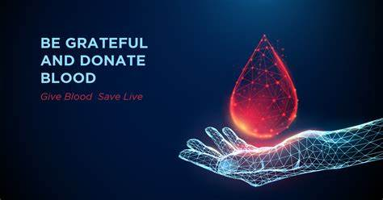

BLOOD PLASMA

Donation BasicsGiving blood is as easys as 1, 2, 3. Discover more about how to donate and share your power to save lives. About BloodBlood is essential to life and there is no substitute. It cannot be made or manufactured. Generous blood donors are the only source of blood for patients in need of a blood transfusion. Am I Eligible?To prioritize the safety and well-being of both donors and patients, there are blood donation eligibility requirements that donors must meet based on their intended donation |

|